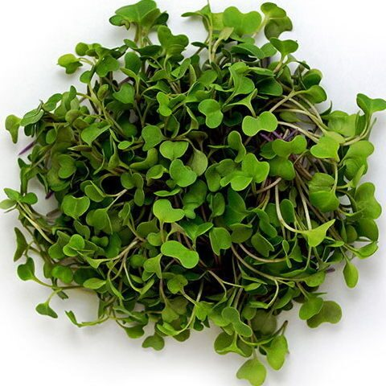

Что такое Mикрозелень?
Микрозеленью называют ростки овощных и зеленных культур, используемые в пищу в фазе 1-2 настоящего листа (обычно в возрасте не более 10-14 дней, для скороспелых культур — например, кресс-салата — достаточно 4-6 дней). Максимальная высота таких растений — 4 см, выше могут быть разве что горох и подсолнух
Молодые растения содержат высокую концентрацию биологически активных веществ, которой значительно выше, чем в зрелых овощах, фруктах или зелени и даже больше, чем в проростках. К тому же, при хранении любой растительной пищи всегда теряется часть ее полезных свойств, а микрозелень всегда употребляется свежей, сохраняя максимум ценных элементов.

Польза Микрозелени!
1. Полный набор витаминов!
По сравнению со своими взрослыми «родственниками», микрозелень по содержанию многих важных веществ (которые находятся в легкоусвояемой форме для организма) опережает их в десятки раз.
2. Удобство выращивания!
Для того, чтобы вырастить микрозелень вам не потребуется специальное оборудование и тепличные условия. Все, что вам нужно уже есть под рукой, а так же 2-3 минуты вашего времени.
3. Мало каллорий, много белка!
Даже в небольшом количестве все виды микрозелени дарят чувство сытости, что в целом позволяет кушать меньше. Они очень богаты высококачественным белком, что помогает контролировать вес и сохранять молодость мышц.
Как выращивают Микрозелень?
Посмотри видео на ютуб о том как происходит весь процесс, от посадки семян, ухода за ростками и результатами!
Зарегистрируйся и получи скидку!
Наши контакты: